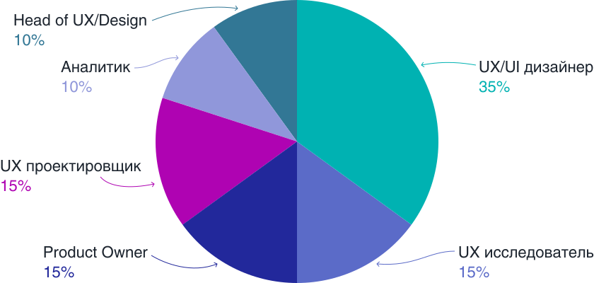

На главную
онлайн-конференция для тех, кто делает
удобные цифровые продукты

Мария
На главную
онлайн-конференция для тех, кто делает
удобные цифровые продукты
Мария
Онлайн-конференция UX-Марафон —
это ежеквартальный слет специалистов
для обмена опытом и вдохновения
каждые 3 месяца
спикеров-практиков
довольных зрителей
Практические знания
Вы получаете концентрированную практическую информацию, которую можно сразу применять. Все спикеры – практики, готовые делиться кейсами, цифрами и рабочими документами, которые используют сами.
Самый свежий опыт
Вы получите самую свежую информацию от топ-специалистов, которая еще не описана в статьях и книгах. Наши эксперты рассказывают, какие навыки сейчас важны, как повышать компетентность и развиваться, где искать вдохновение и поддержку.
Общение с профессионалами
В течение онлайн-конференции вы можете задавать вопросы спикерам и общаться с другими участниками сообщества. Общение в сообществе продолжается и после события.
Удобный формат
Доклады можно смотреть одному и с командой, онлайн во время конференции или после в записи. Из любой точки мира, где есть Интернет. Можно вернуться к теме, когда она станет актуальна и собрать только релевантный материал.
Сертификат
Сертификат участника на русском и английском языке повысит ценность вашего портфолио.
Опрос проведен на канале UX-Марафон

Асия Усяева
UX researcher, Пятёрочка
UX-марафон - это квинтэссенция полезностей как для начинающих, так и для продвинутых. Спикеры без воды и с юмором описывают реальные кейсы и обсуждают работающие методы. Для меня ценно мое время и с учётом обилия информации очень жаль растратиться и пропустить что-то действительно важное и нужное. А на UX-марафоне ни одна минута не проходит впустую.

Юлия Высоцкая
UX/UI Дизайнер, Conversor
В начале 2020 года я задалась целью за год повысить свои скилы как минимум вдвое. И вот в один день в очередных поисках свежей и релевантной! информации я наткнулась на UX марафон. Первый мой марафон был в апреле и вот уже второй в июле. Прослушав все выступления, могу с уверенностью сказать что это самая лучшая и релевантная! информация, которая мне очень помогла узнать и разъяснить многие моменты которые раньше были непонятны. С нетерпением жду следующий марафон осенью.

Степан Воеводин
Старший UX/UI Designer, Мое Дело
Очень нравится это мероприятие. Удобный формат, можно смотреть не выходя из дома. Очень много полезной информации, можно задавать вопросы спикерам в чате. Всегда интересные докладчики. Еще ни разу не пожалел об участии в таком мероприятии.